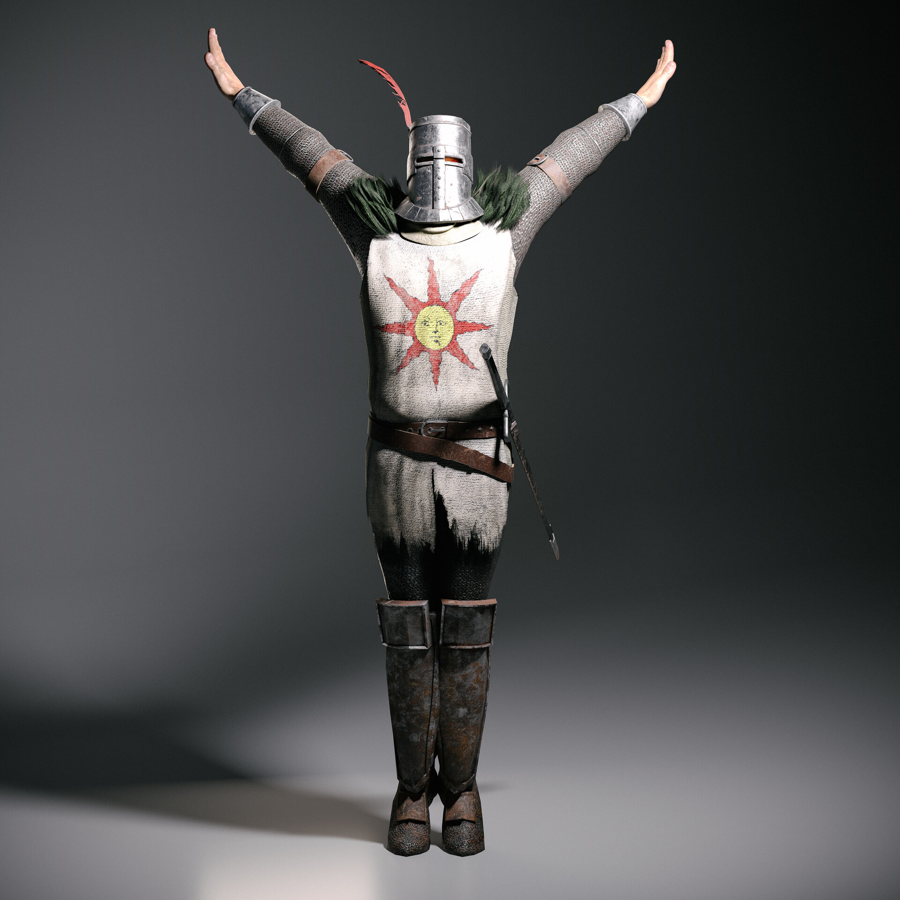

| Nombre de la build | clase | descripcion |
|---|---|---|
| brujo arcano | astrólogo | Se centra en el uso de hechizos poderosos para infligir daño mágico a distancia. |
| paladin de la luz | profeta | Combina habilidades de combate cuerpo a cuerpo con milagros para curación y protección. |
| Guerrero Berserker: | Héroe | Utiliza armas de gran tamaño y potencia de ataque para derrotar a los enemigos rápidamente. |
| Cazador de Bestias | samurai | Se especializa en el uso de arcos y habilidades furtivas para emboscar a los enemigos desde la distancia. |
| Nigromante Oscuro | astrólogo | Invoca y controla esbirros no muertos para atacar a los enemigos mientras el nigromante apoya desde atrás con hechizos |
| Asesino Sombrío | Bandido | Se enfoca en ataques rápidos y precisos con armas ágiles, aprovechando la capacidad de evasión y el sigilo. |
| Guardián del Hierro | vagante | Utiliza armadura pesada y un escudo grande para absorber el daño mientras mantiene una presencia imponente en el campo de batalla. |
| Hechicero del Tiempo | astrólogo | Manipula el tiempo para ralentizar a los enemigos y aumentar la velocidad de movimiento y ataque del personaje. |
| Infiltrado Arcano | confesor | Combina el uso de armas cuerpo a cuerpo con habilidades mágicas para un enfoque versátil en el combate. |
| Bárbaro Salvaje | Héroe | Emplea ataques brutales y salvajes con armas de doble filo, sacrificando la defensa por un poder ofensivo desenfrenado. |
para finalizar mostramos a nuestro dios. Solaire de Astora
